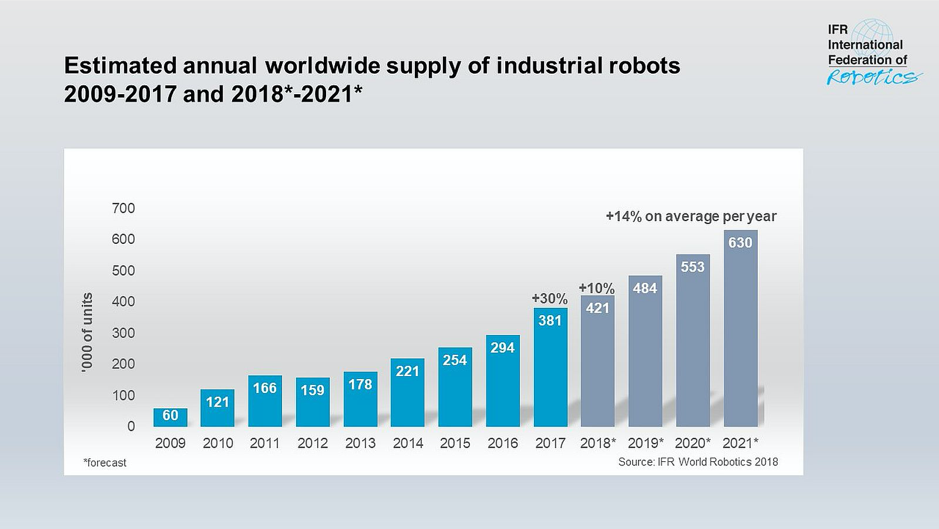
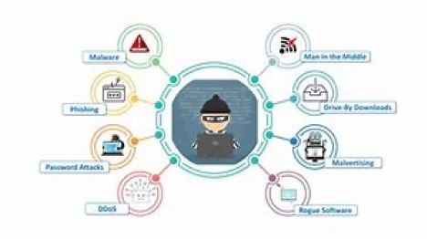
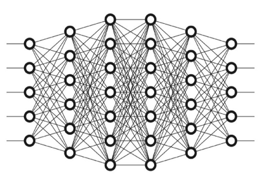
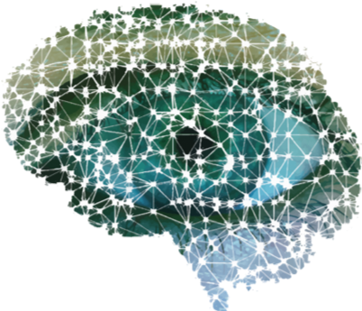

IT Technologies
REPORT 1 - Robotics
There Is constant testing of systems that will perform full automation, but the intelligence of the systems is not at a level where it is safer than a vehicle that is operated by a human. The standard that is required for the technology to be deemed viable for commercial use is that it can function more safely than a human operated vehicle as most accidents on roads are due to human error. For companies to satisfy that standard, advancements in artificial intelligence are required and rigorous testing in many different conditions and situations. There are other factors that will affect a robots or AI’s ability to operate a vehicle such as the condition of infrastructure. The condition of the roads, such as when lane markings have faded or where potholes have developed would hinder an AI’s ability to make decisions in real time on the road. These AI operated vehicles would require constant network communication in order to gain information such as what other vehicles around them are doing, what upcoming hazards are there such as road works or weather changes like rain that would impact the way the vehicle is operated. Internet and network infrastructure are not consistent enough to allow vehicles to gain information that they require in real time due to factors such as latency or outages. If these issues still arise then they would pose as a huge risk to the passengers of the vehicle. Traffic laws would need to be updated to include autonomous vehicles in the scope. There would need to be laws on when autonomous cars can be driven, where they can be driven and for what purpose. Some proposed examples are that they would require their own lanes on roads and could initially serve as basic transport. This however raises many issues such as choosing what roads to build these lanes on and how to integrate them around the infrastructure that we already have.

Aside from industrial applications, work towards lifelike, humanoid robots continues. The most famous example of a leading-edge humanoid robot would have to be Hanson Robotics’ Sophia. Dubbed “The Hot Robot”, she has seen vast media exposure, even appearing on The Tonight Show starring Jimmy Fallon where the two of them performed a duet of “Say Something” by A Great Big World. Hanson Robotics has come under fire by many prominent AI researchers for being “puppeteers” and giving a false impression of a more advanced machine than Sophia really is.
They argue that giving a false impression of advancement will lead to a cooling of investment and study into AI, although others have
argued that this may be a good thing as it leads towards more technical driven improvements rather than performative. Hanson’s chief scientist has responded to the criticism, admitting that founder David Hanson’s use of the language “alive” was perhaps erroneous but meant in earnest as he had created a sculpture that now moves and talks and to some degree understands human conversation. This did not stop the sensationalist way the media continues to report on her existence however, as can be seen in this gushing coverage by US media network NBC’s “The Today Show”.
Rather than being a fully artificially intelligent humanoid robot, Sophia is merely a platform for running programs that interact with users, she can recite long speeches, give crafted responses to certain questions or operate on a “chatbot” type system to simulate real conversation. This has not stopped her from making speeches to the united nations and NATO conferences about the future of AI and robotics however.
Modern robots are capable of complex movement and problem solving, allowing them to traverse difficult terrain for the purpose of environmental research or other dangerous activities that humans would be better off not undertaking. “QinetiQ” North America now manufacture a lightweight “backpack” multipurpose unmanned ground robot called “Dragon Runner 20” that can be deployed anywhere, anytime to provide safe reconnaissance and disposal of potential hazards like Toxic Waste and Improvised Explosive Devices.
The Application of robotics to the field of prosthetic limbs is of interest to medical and military entities. These prosthetics have a far greater positive effect on a person’s quality of life than a stationary plastic limb. Electromyography is the study of electrical signals sent by the brain to the muscles. Proportional Myoelectric Control allows a user to operate the functions of a robotic limb using these signals and achieve much more dexterity and motor control than previous types of robotic prosthetics which required manual user operation. The prosthetic limb detects electromyographic signals from the user’s muscles and performs a corresponding action. Some of these limbs are being developed with enough dexterity to operate firearms as shown here with the somewhat ominously named “Terminator Arm”
What is the likely impact?
The impact of increasing automation will likely result in the complete abandonment of laborious industry work for human beings, as has already been demonstrated in many places around the world. This does not however mean a decrease in employment. As labour intensive, less skilled tasks are handled by robots capable of repeating a task indefinitely without tiring or deviation, workers are generally retrained to work in other areas where they can benefit the company they work for and although many jobs will end up eliminated by automation and this can cause worker displacement and psychological discomfort to the individual, it is measurably beneficial to society to retrain workers to perform more skilled and complex, or rather, more modern jobs.
Robotics in medicine benefit surgeons by being able to relieve them during massive operations and by performing accurate microsurgery. Currently, surgical robots require human input, but the AI systems assist the surgeons in performing microscopic tasks. It is possible that in future, surgeons need only act in a supervisory role as medical procedures are completed, although we are many years if not decades away from replacing human surgeons with robots.
Additionally, the idea of having a robot “Butler” has been a popular concept in science fiction since at least the 1950s with “Robby the Robot Butler” from the film, Forbidden Planet. The idea of having a personalised automaton to attend your every whim and desire and keep your house perfectly tidied must surely be appealing to almost everyone. These potentially time saving creations are already starting to be used to greet patrons at some Luxury hotels, even being used to carry luggage to and from rooms and mingle with the crowd in an open lobby. One imagines in future these machines will be capable of providing any number of services, including but not limited to cooking food and perhaps electronic repair, and will look increasingly lifelike to the point of a humanoid “Android” robot, much like “Sophia the Hot Robot” only hopefully less overwhelmingly creepy as the issue regarding the uncanny valley is addressed. These machines may one day be entrusted to look after children.
How will this impact my life?
As robotic technology advances, many assume we will see a far greater integration of automation into our daily lives. The aging and infirmed will likely be taken care of by a robotic assistant to take pressure off aged care nurses, whose jobs I imagine will become much more volume driven as the population continues to age. These robotic assistants will make medication and pain relief far more efficient as they will have the capacity to immediately run blood analysis and return uniquely appropriate doses for each patient.
Human beings may eventually come to be completely integrated with technology through implanted robotics or biomechanical means. It is possible we may one day be able to access the internet with a mere thought through implanted microchips. The video game and visual novel series “Deus Ex” explores the philosophical implications of this at length, exploring what could happen if these systems were able to be breached and remotely operated, turned off or simply caused to go haywire. It also raises the idea that if humans are to become augmented, who? Will this technology only be available to those who can afford it or victims of tragic accidents? If the performance achieves superhuman ability, will the devices be regulated? Will there be any market at all for un-enhanced labourers or will having robotic limbs be a requirement for heavy lifting operations?
I believe in post humanism and think that a liberal exploration of the integration of technology with human beings is essential to our development into a more advanced species, perhaps capable of survival in more harsh environments found throughout our solar system. The implication for manual labour alone; a human who can lift several hundred kilograms easily would replace the need for several slow operations of a forklift for example and I’d be one of the first to volunteer for this kind of integration.
REPORT 2 - Cybersecurity

Cybersecurity, sometimes referred to as Computer Security, is the practice of protecting systems connected to the internet from cyber-attacks or “hacking”. Cybersecurity, together with physical security, are used to protect against unauthorized access to data centers and other systems.
(Cisco, 2019)
Cyberattacks are usually aimed at accessing, altering or destroying sensitive information or extorting money from users or ransoming the security flaw, and in some cases “hacktivism” aimed at disrupting corporate business processes. Cyberattacks are classified into the following:
Denial of Service Attack:
A Denial of Service attack is designed to inhibit legitimate access to a network, usually by flooding it and/or the supporting infrastructure with excessive requests for authentication. This takes up the bandwidth needed by the network to process legitimate requests. Because of this, the server can no longer effectively process incoming requests and must be recalibrated and defended against the attack in order to continue operation.

Malware:
Malware is a portmanteau of the words “Malicious” and “Software” Under this umbrella term is viruses, worms, spyware, trojans, and ransomware programs. Once installed, these programs can activate scripts to cause extensive harm to your system, block access to information or system access entirely and steal personal information.
Phishing:
Phishing is defined as any attempt to steal sensitive information such as usernames, passwords and bank account details, or to install malware by using email addresses that appear to come from official or trusted sources.
Spoofing:
Is the act of disguising a communication from an unknown source as being from a known, trusted source. (https://www.forcepoint.com/cyber-edu/spoofing)
Ransomware:
This is a particularly nasty type of Malware. It is designed to ransom access to the system by blocking access to important files or blocking system access entirely under the premise that access will be restored once payment has been received. It is generally advised by IT security professionals that paying the ransom demanded by the program is a bad idea, as the hacker is certainly not bound by any obligation to restore your access or your data.
These serious crimes are committed online and can be prevented or their damage mitigated by proper implementation of Cyber Security concepts.
IBMQRadarAdvisor with Watson: A security platform that detects incidents and alerts an analyst, who can assign it to gather specific data about the incident available in QRadar. Watson then performs a threat discovery analysis, explores its base of knowledge to build an understanding of the incident and discover any relevant information. The QRadar Advisor with Watson then refines the information into a detailed report accessible to the analyst, who can then send the report on to a cybersecurity response team.
Wireshark: Wireshark assess the vulnerabilities in a network in which the user is currently operating. It captures live data that allows you to see what is happening on your network at a microscopic level and creates and offline analysis sheet to help track vulnerabilities and possible intrusions.
Cryptostopper: Cryptostopper is one of the best tools available to prevent ransomware and malware attacks on a computer system. Cryptostopper finds local “bot” scripts that are encrypting data and deletes them. It uses the creation of a deception formula to bait the bots into attacking it. Once the bots have taken the bait, Cryptostopper detects and deletes the code.
N Map: Nmap is an open source utility made available for network security. It has the capacity to scan a huge number of machines, literally thousands, on a single network all at once. It does this by sending data packets to the computer and analyzing the response received.
Burp Suite: Burp Suits is a web scanning algorithm security tool used to scan web-based applications for security vulnerabilities. It can perform a penetration test to assess the strength of web-based security.
OpenVAS: The Open Vulnerability Assessment System is a software framework encompassing many aspects of vulnerability assessment and management. OpenVAS products are all free of charge and licensed for General Public Use.
Nessus: Nessus is a vulnerability assessment program that also scans the network for unauthorized access.
Metasploit Framework: Metasploit is often considered the most advanced open source framework for vulnerability detection available.
SolarWinds Mail Assure: SolarWinds Mail Assure is a cloud-based email security service aimed at protecting the user from inbound threats and scanning outbound emails to ensure safety from cyber threats.
(EDUCBA, 2019)
In the digital age, an increasing portion of the population remains constantly connected to the internet, be it through a computer during their work day, playing games at night or simply by owning a smartphone. The critical infrastructure that this connectivity relies upon, like power plants and data centers, must be secured against cyber intrusion for our modern society to function. In addition, personal data is now easier than ever to access without authorization. As such, the importance of Cyberthreat Research cannot be understated. By studying emerging threats and cyber attack strategies, researchers reveal potential vulnerabilities before they can be exploited, and strengthen the tools we use to defend against them. This kind of work makes the sharing of data and the general use of the internet safer for all users, not just corporate entities with massive Data Centers. Their work makes the Internet safer for everyone.
The implementation of Cyber Security concepts and practices provides a multitude of benefits to a user or organization. Securing data against digital intrusion is massively important in an age where sensitive data is stored digitally.
• Protecting Sensitive Data: Data that a user or organization does not want to be made publicly available, like an individual’s social security details or corporate secrets should be protected by comprehensive cyber security as this data is extremely valuable to those who would misuse it.
• Hampering Unauthorized Access: Cybersecurity suites can detect and isolate an attempted intrusion and following up by hindering the ability of the intruder to continue to access the system.
• Ensuring data reliability: Properly secured data is protected from theft and alteration and ensures the validity and security of sensitive information. This information could be considered more reliable than data that is unprotected and vulnerable to alteration.
(EDUCBA, 2019)
Job Prospects in the Cyber Security sector will obviously continue to increase into the future, with data storage moving ever offsite and computers becoming more and more powerful. Forbes implies that official estimates put the growth rate of the industry at 37% per year through at least 2022.
(Armerding, 2019)
How does cybersecurity affect us?
The age of computing and cloud-based data storage has increased the convenience and reduced the cost of every day computing technologies and communication devices. However, with convenience comes vulnerability. When everything you do is connected to the internet, your data is potentially vulnerable to various forms of attack. Because of this, countermeasures have been developed and the information relating to the misuse of personal data is available for everyone to read. Being unaware of cybersecurity is the leading reason people become victims of online scams and cyberattacks. These victims can have their important data like Medical History, Bank record and even private photos publicly revealed or used against them for exploitation and financial gain.
A recent study indicates that concerns regarding digital security have caused many people to take more comprehensive measures to protect their digital security.
• 57% claim to now change passwords for web sites and online services on a regular basis
• 52% have taken steps to strengthen their anti-virus protection
• 49% have activated PIN or password protection on tablets and smartphones
• 46% now avoid duplicating passwords across multiple sites and services
• 28% have, where supported, activated two-factor authentication for logging in
• 6% have done nothing to improve their online security.
(Help Net Security, 2019)
How does Cybersecurity Impact me?
As a banker and having had some firsthand information regarding the way cybercrime can affects one’s life, comprehensive knowledge of cybersecurity affects the way I navigate my use of technology and the internet. It makes me favor caution over expediency, and really makes me think before I click. My concerns about security are a key aspect in my motivation to study Information Technology and ultimately to specialize in cybersecurity. Sharing information and knowledge about cybersecurity to my family and friends has also given them a new way to look at how they use technology and make changes on their online behavior.
REPORT 3 - Machine Learning
Machine learning is the study of algorithms and statistical models used to automate certain tasks based on input and pattern analysis. The algorithms used in the process of machine learning build a mathematical model based on sample data input by the programmer in order to make predictions or decisions without direct input from a human user. This technology is used across a broad range of modern computing applications, including but not limited to Image Recognition software like Google’s “reverse Image search” or commonly in email services to enable the filtering of spam and other unwanted messages.
Machine Learning is considered a subset of Artificial Intelligence (AI) and is thought by some to be a stepping stone to reaching Artificial General Intelligence, a state in which a machine becomes as self-aware and intelligent as a human being and a potential step towards a technological singularity whereby the AI becomes qualitatively smarter than human beings and develops the ability to improve itself exponentially. Deep learning machines are networked algorithms capable of learning from unlabelled data to create structured outputs. This means they are capable of learning with minimal human interference and solving complicated problems.
Deep Learning Machines developed by google and OpenAI were recently in 2015 able to beat several Atari games with superhuman ability by analysing the raw pixel data and adjusting input accordingly.
Later in 2016, DeepMind revealed an AI based on the supervised learning structure called AlphaGo. Go is a board game in which the aim is to surround more territory than the enemy player. The AI went on to beat several professional and world ranked players. Future iterations however, began to use unstructured deep learning, in other words, it taught itself how to play the game by playing against itself. This resulted in “AlphaGo Zero” becoming smarter than its progenitor in a matter of days as opposed to months and going on to 8just 40 days. It did all of this without any human input at all. In 2018, OpenAI competed against the top 5 Dota2 players in the world and lost two games in a row.
Geoffrey Hinton, the “Godfather of Deep Learning” has stated that he believes the fundamental systems Deep Learning is based on need to be completely re-written by a new generation of graduates in order to continue to advance.
A team led by Dr Ben Goertzel, vice chairman of the transhumanist group “Humanity+” aims to create a decentralised network of artificial intelligences wherein anyone in the world can contribute. In this way, it is theorized that the AIs in this network learn from each other continually at an ever-increasing rate and lead to the entire network becoming more aware. The model looks something like the image to the right, where every point is constantly in contact with each other, capable of learning at a vastly superior rate.
The operations or “Tasks” of a machine learning algorithm are organized into many categories and sub-categories:
Classification algorithms are a type of supervised learning. Classification is used to group outputs into a specific set of values like “true or false” (Boolean). For example, an email inbox uses a classification algorithm to filter emails into specific folders i.e. outputs. The algorithm would use its input data to determine if an email falls under “spam” or “Not spam” and so on depending on your own added tags and folders.
Regression algorithms are used to evaluate the relationship between variables during a continuous output. This can be used to monitor data like temperature and distance, amount of rain expected etc. These algorithms use training (input) data to make predictions about future patterns such as in a weather pattern or even financial forecasting.
Supervised Learning: In this machine learning category we see a mathematical 2model that provides both input and outputs, meaning the machine will only be able to respond to specific conditions using specific output. For example, if you want to use reverse image searches to find similar pictures or to find the source of the original, the algorithm would analyse the picture and determine similar results based on image tags or labels which then become the output. Semantic Segmentation is the current state of the art in image recognition and is designed to be able to identify an image on a pixel by pixel basis.
Semi-supervised learning: These algorithms are Similar to supervised learning except that their input “training data” does not contain tags or labels. This model uses a very small amount of labelled training data and a large amount of unlabelled data. Researchers have discovered that this method can significantly increase the accuracy of machine learning as well as alleviating the cost in man hours labelling massive amounts of data for input.
Unsupervised Learning: Also known as “deep learning”, this type of algorithm is based on the idea of Neuroplasticity and seeks to both better understand the phenomena in human beings and to advance the capacity for pattern recognition in artificial intelligence. The data used by the algorithm is made entirely of inputs and contains no output labels. Unsupervised learning can be used to determine clustering of data points and can discover patterns. This allows the algorithm to process the input data into self-categorized outputs.
What is the likely impact?
The future of machine learning will likely be an ever-increasing level of machine intelligence. Some researchers and scientists, among them the late Stephen Hawking, and pundits and businessmen like Elon Musk who incidentally compared the development of AI to “summoning the demon” have warned strongly against the development of Artificial General Intelligence for fear of the machine becoming both smart enough to improve upon itself and recognize us as a threat to its existence. This could be catastrophic, and the concept has been explored at length in fiction and in scientific papers. However, the benefits of an artificial intelligence operating many of our networks should not be overlooked. It has the potential to vastly improve the efficiency in our daily lives by continually finding ways to improve upon systems already in place or introducing new ones. Examples of how “AI” is already doing this include Google Home or Alexa, and GPS systems. Children are now growing up with these virtual assistants in their homes, and the general impact on social and psychological development as well as the capacity for learning is yet to be fully understood.
Other applications will include:
More intelligent gaming: With AIs able to understand the skill level of the player and provide a uniquely challenging experience without being completely overwhelming or even creating unique user experiences with characters reacting in real time to player actions.
Search Engine Personalization: Something many users are worried about in 2019 is the way search engines aggregate data to personalize search results. This is something that is surely inevitably going to be a part of the future of advertising however. The way each user experiences a search on the internet is currently varied via a series of training data and output tags, but as deep learning advances, everything from the way you search to the results to the look of the page could be customised based on the preferences of the user with very minimal input.
The potential for large scale use of quantum computing. In the simplest terms, Quantum Computing is a type of computing that uses a quantum algorithm. This application is highly advanced and has only just recently been proven to be physically possible when google achieved what is known as “quantum supremacy”, essentially performing the first actual quantum computation on a quantum computer. This calculation would have taken the fastest supercomputers on earth over 10,000 years to complete alone, but Google’s computer achieved it in just 200 seconds. This is obviously a revolutionary technology and has the potential for massive impacts on cybersecurity, as a machine capable of that level of processing would make all encryption developed up until now completely vulnerable. It remains to be seen whether this technology will ever be available at a commercial or personal level.
How will this impact my life?
I will always continue to use the most advanced computing technology financially available to me out of both curiosity and necessity. My eyes are degrading slowly over time and I believe at some point I will be unable to drive, and the self-driving cars give me hope that I may be able to keep at least some of my autonomy. Machine learning will be an integral part of implementing robotic prosthetics for amputees in order to recognize the signals from the brain needed to operate the limb at a close to human or perhaps even enhanced level of functionality. Other ways I would be impacted would (hopefully) be a general improvement in the quality of life and the efficiency of all systems currently employed by our society such as traffic lights. I’d hate to imagine how much time I’ve spent sitting on a corner waiting to turn while no traffic is coming from any direction and the light stubbornly stays red. Some analysists claim that by 2020 about 60 percent of personal devices will use cloud based AI systems and although I am not currently using one myself I certainly see it happening in the near future, as I wish to add a “smart meter” to my electricity connection and smart power boards connected to my WIFI to monitor and switch off idle devices in order to minimise both my electricity bill and my environmental impact.
REPORT 4 - Autonomous Vehicles
The term Autonomous Vehicles refers to the idea of automating tasks that are generally associated with driving such as breaking, turning, changing lanes and similar actions required to drive a car. This will remove the requirement of a human operator to drive the car or similar vehicle. Currently, cars are being tested by companies such as Google and Tesla and they are working towards creating computer systems that will react to unexpected changes in driving conditions, comply with road rules and function in a way that maximises human safety. There are different levels of automation that have been available for several years such as automatic breaking, cruise control, parking assistance and collision warnings. These functions that are common in most modern cars represent the standard that autonomous cars are at today as technology and research progresses towards vehicles that are fully automated. If a vehicle was fully automated it would mean that all aspects of driving the vehicle would be controlled by a computer. There would be automated steering, acceleration, reaction to change of environment, evaluation and decision making that we as drivers carry out daily when operating a vehicle.
There Is constant testing of systems that will perform full automation, but the intelligence of the systems is not at a level where it is safer than a vehicle that is operated by a human. The standard that is required for the technology to be deemed viable for commercial use is that it can function more safely than a human operated vehicle as most accidents on roads are due to human error. For companies to satisfy that standard, advancements in artificial intelligence are required and rigorous testing in many different conditions and situations. There are other factors that will affect a robots or AI’s ability to operate a vehicle such as the condition of infrastructure. The condition of the roads, such as when lane markings have faded or where potholes have developed would hinder an AI’s ability to make decisions in real time on the road. These AI operated vehicles would require constant network communication in order to gain information such as what other vehicles around them are doing, what upcoming hazards are there such as road works or weather changes like rain that would impact the way the vehicle is operated. Internet and network infrastructure are not consistent enough to allow vehicles to gain information that they require in real time due to factors such as latency or outages. If these issues still arise then they would pose as a huge risk to the passengers of the vehicle. Traffic laws would need to be updated to include autonomous vehicles in the scope. There would need to be laws on when autonomous cars can be driven, where they can be driven and for what purpose. Some proposed examples are that they would require their own lanes on roads and could initially serve as basic transport. This however raises many issues such as choosing what roads to build these lanes on and how to integrate them around the infrastructure that we already have.
The Likely Impact of Autonomous Vehicles:
It would be safe to assume that full autonomous vehicles will not be a part of everyday life in the next three years as there are many factors that are preventing that from happening. The technology and AI may be developed or be close to ready but there is a lot of progress to be made in order to integrate them into society and our current infrastructure. We have already seen the technology be gradually added to vehicles and this trend will continue but we are more than likely decades away from having fully autonomous vehicles ready and available for the year.
The anticipated impact that autonomous vehicles will have on society is major, as it would affect society in many ways. Safety for passengers would be altered as many accidents on roads occur due to human error and if humans were not making decisions on the road then this would no longer be an issue. The environmental impact of the vehicles would be greatly reduced from what it currently is now, due to the fact that these autonomous vehicles would be able to plan out trips with the most efficient paths and use real time data to do so. The vehicles would also be operated in a way that allows for an efficient use of whatever resource that powers them, be that petrol, electricity or some other power source that may be developed. There is a chance that jobs will be lost, depending on the reliance of these vehicles for commercial use. They may replace the need for train drivers, tram and bus drivers and even truck drivers who are trained in operating heavy vehicles. There would be no requirement of police monitoring of drivers on the road which come in the form of checking travel speeds or licence checks as all vehicles would inherently follow the speed limits and the passengers may not require a licence to simply sit in the vehicle and it travel. They will certainly create the need for new jobs as there may be more skills involved in the maintenance of these vehicles as compared to that of the present-day vehicles. There would need to be a significant change in the current infrastructure to areas where autonomous vehicles are going to be driven and therefore jobs would be created for those in the construction and maintenance industries for that infrastructure. As the vehicles would require a network connection to gain real time information as they are on the road, the network would always need to be monitored, therefore many jobs for technology specialists will be created to keep up with the demand.
The Likely Impact on me:
In terms of direct impact to myself and friends or family, there would be no need to have others in the family taught to drive or potentially gain a licence as there may be no such thing. There will be no need to ensure that I am well rested and alert, or I could even be intoxicated as a passenger in the vehicle which would have no detrimental effect on the vehicles ability to drive safely. The way that members of society interact with roads would also change, there would be less of a chance of a pedestrian to be injured when crossing a road. It would however limit employment opportunities as there are currently companies such as Uber that allow drivers to make their own time for work whenever it suits them, meaning they could do it as a second job in their spare time on weekends or in the evening after their main form of employment. There would be no need for these kinds of drivers due to autonomous vehicles.